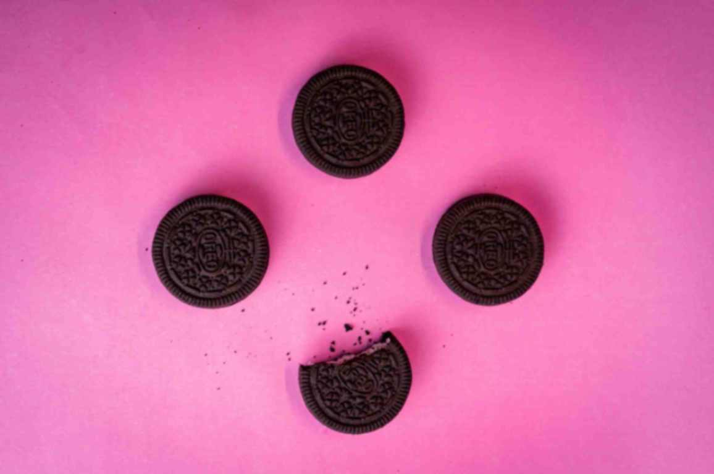

Vision
International distribution
Oreo cookies are distributed worldwide
through a variety of sales and marketing channels.
As their popularity continues to grow, so too does the
amount of distribution that comes with it. According to the Kraft
Foods company, the Oreo is the "World's Best Selling Cookie".
In March 2012, Time magazine reported that Oreo cookies were available
in more than 100 countries. Overall, it is estimated that since the Oreo
cookie's inception in 1912, over 450 billion Oreos have been produced worldwide.
Oreos were first introduced into Britain through the supermarket chain Sainsbury's.
For several years, this was the only supermarket chain in the UK to stock the Oreo
until May 2008, when Kraft decided to fully launch the Oreo across the whole of the UK.
Its packaging was redesigned into the more familiar British tube design, accompanied by
a 4.5M television advertising campaign based around the "twist, lick, dunk" catchphrase.
In a 2020 national poll the Oreo was ranked the 16th most popular biscuit in the UK,
with McVitie's chocolate digestive topping the list.
In the UK, Kraft partnered with McDonald's to introduce the Oreo McFlurry
(which was already on sale in several other countries, including the US)
into McDonald's locations across the country during its annual Great Tastes
of America promotions; in October 2015, the Oreo McFlurry then became a permanent
menu item at McDonald's in the UK. An Oreo-flavored "Krushem" drink was also on sale
in KFC stores across Britain.
The ingredients of the British Oreo (as listed on the UK Oreo website) are slightly
different from those of the US Oreo. Unlike the US version, the British Oreo originally
contained whey powder, which was not suitable for people with lactose intolerance. Additionally,
as the whey powder was sourced from cheese made with calf rennet, the British version was also
unsuitable for vegetarians. On December 6, 2011, Kraft announced that production of Oreo was
to start in the UK with their Cadbury Trebor Bassett factory in Sheffield, South Yorkshire,
being selected to manufacture Oreo in Britain for the first time. Production began there in
May 2013.
Oreo cookies were introduced onto the Indian market by Cadbury India in 2011. In Pakistan,
Oreo is manufactured and sold by Continental Biscuits Limited under the LU brand. In Japan,
Oreo and other Nabisco products were produced by Yamazaki Baking until Mondelez terminated
their licensing deal in favor of moving production to China. A year later, Yamazaki introduced
their version of Oreo called "Noir", which is produced at the former Oreo factory in Ibaraki Prefecture.
Go top
 Click
Click